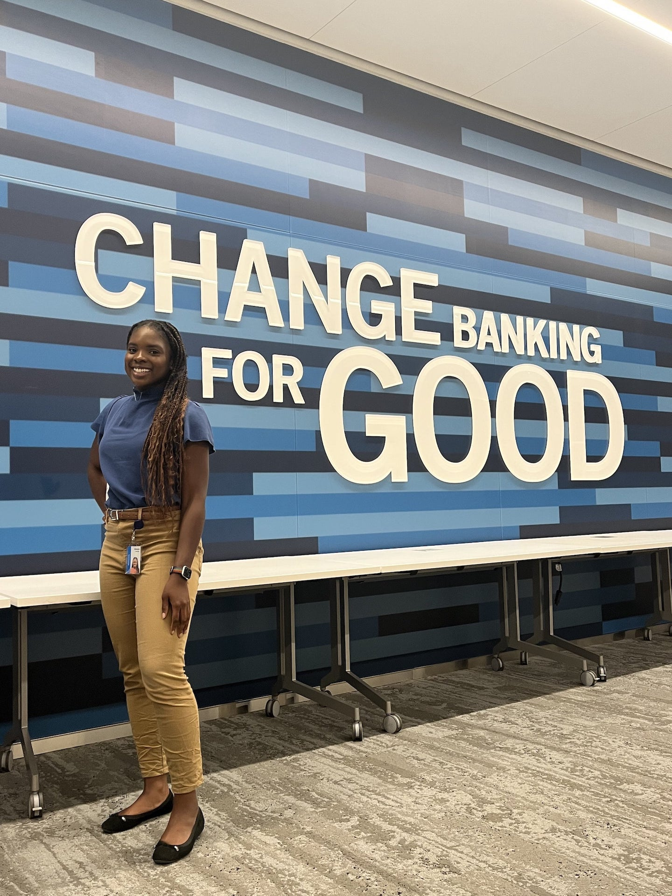
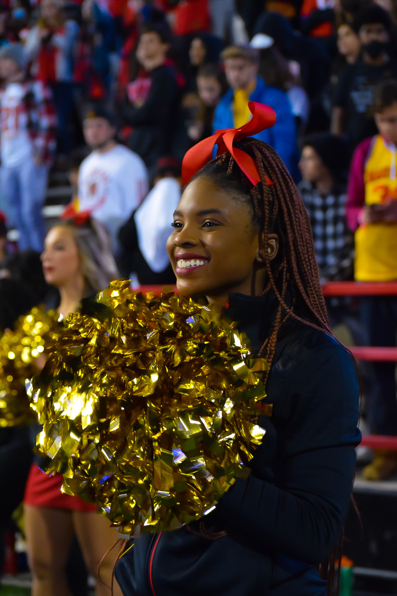

Makayla George
About Me
From the time I was able to fully perceive and analyze the world around me, one thing became overly
apparent. When I looked at those in my classes, my clubs, and especially those in the career fields that I
one day hoped to pursue, there was never anyone who looked like me. This observation…this fact, soon
became my driving force; it is something that guides me in both my education and professional development.
Whatever I do, I want to be the best. My goal: to be the representation that I needed when I was younger
and inspire other black girls.
As someone who is highly inquisitive and a natural leader, I have grown a passion for the intersection of business
and technology. I am currently pursuing a degree in Information Systems at the University of Maryland while also
completing an honors citation in Cybersecurity. I am eager to build on my experience in Business Analytics and explore
careers in Product Management .


Last semester I completed a study aborad program at Erasmus University and learned business from a global perspective
